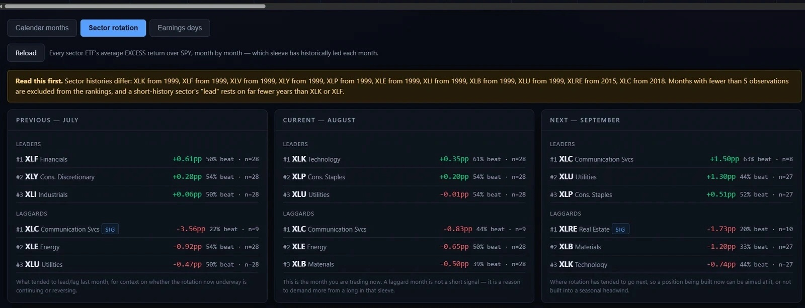

This is a demonstration website built to showcase web design and AI-assisted development. All data, figures, charts, tickers, and analysis shown are fictional and for illustration only — none of it reflects any real security, company, or market.
Nothing on this site is financial, investment, or trading advice, and no professional or fiduciary relationship is created by using it. This site and its content are provided "as is," without warranty of any kind. By clicking "I Agree," you confirm you have read and agree to these terms, and that you will not rely on any information on this site for research, analysis, or decisions of any kind.
This site uses your browser's local storage only to remember that you've dismissed this notice.
Trade journal, position sizing, portfolio risk, trading scripts, and mobile.
Record every trade with setup type, entry, exit, R-multiple, and expected outcome. Journal computes:
Given account size, risk per trade (%), and stop distance, calculates position size automatically. Enforces:
Ten binary gates to confirm before sizing:
Real-time view of open risk by position, by sector, and by circuit-breaker threshold. Shows:
Every sector ETF's average excess return over SPX, month by month — which sleeve has historically led each month, with previous/current/next laid out side by side so you can see whether a rotation is continuing or reversing.

Real screenshot — Seasonality → Sector rotation
Complete chart toolkit for every layer of the system:
COLOR-SYSTEM.md. To change the desk's look, update that one file and recompile the scripts. A single source of truth prevents color drift between chart and app.
A self-contained HTML file that runs the full Screener, Ticker Detail, and Backtest on your phone, offline:
tools/standalone-template.html and run npm run build:phone — standalone/index.html is generated.All information and data on this site exist only to build an example website. Ignore them and do not use them for any analysis.
Not an automated trader. Solaris Flow is a decision-support calculator only — every trade is entered and exited by hand in your broker. It synthesizes data, scores quality, and keeps a journal. It does not place orders, connect to a broker API, or touch real money.
Not financial advice. This is a personal research tool and hobby project — I am not a licensed financial advisor, broker-dealer, or professional trader. I am simply interested in using AI to build interesting applications and explore new ideas in software development. Every ticker, chart, screenshot, and figure shown throughout this site is an illustrative example for demonstration purposes only — none of it is real trading analysis or a recommendation on any specific security. This entire site and Solaris Flow application were built using Claude Code and AI.
This site and all its content are provided "as is," without warranty of any kind, express or implied, including as to accuracy, completeness, or fitness for a particular purpose. No fiduciary, advisory, or professional relationship is created by your use of this site. You are solely responsible for your own research, judgment, and any trading or investment decisions you make. By accessing or using this site or its information in any way, you assume all associated risk and agree to release, indemnify, and hold harmless the creator from any and all liability, claims, losses, or damages of any kind arising from or connected to that use.